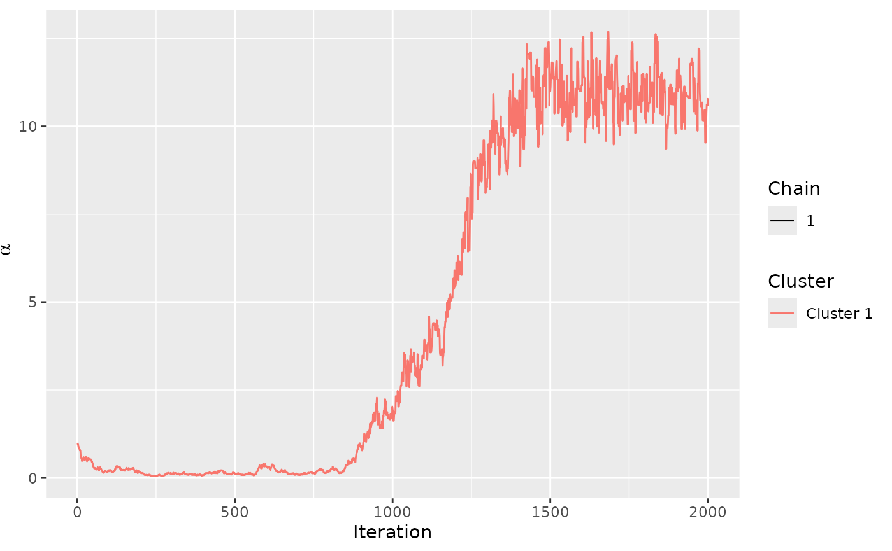
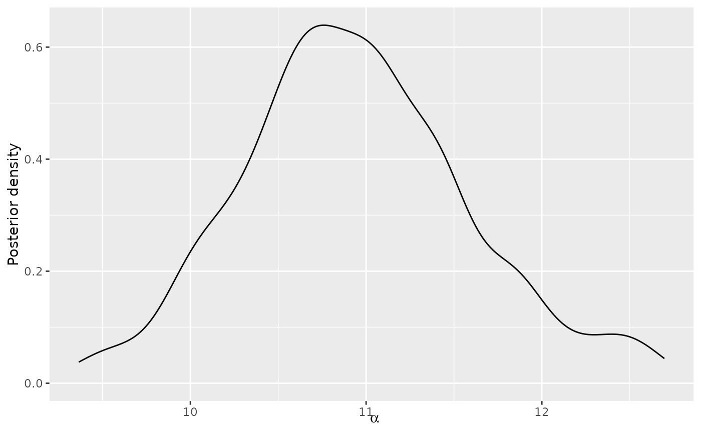

Set or update the burnin of a model computed using Metropolis-Hastings.
Arguments
- model
An object of class
BayesMallowsreturned fromcompute_mallows()or an object of classBayesMallowsMixturesreturned fromcompute_mallows_mixtures().- ...
Optional arguments passed on to other methods. Currently not used.
- value
An integer specifying the burnin. If
modelis of classBayesMallowsMixtures, a single value will be assumed to be the burnin for each model element. Alternatively,valuecan be specified as an integer vector of the same length asmodel, and hence a separate burnin can be set for each number of mixture components.
Examples
set.seed(445)
mod <- compute_mallows(setup_rank_data(potato_visual))
assess_convergence(mod)

burnin(mod)
#> NULL
burnin(mod) <- 1500
burnin(mod)
#> [1] 1500
plot(mod)

#'
models <- compute_mallows_mixtures(
data = setup_rank_data(cluster_data),
n_clusters = 1:3)
burnin(models)
#> [[1]]
#> NULL
#>
#> [[2]]
#> NULL
#>
#> [[3]]
#> NULL
#>
burnin(models) <- 100
burnin(models)
#> [[1]]
#> [1] 100
#>
#> [[2]]
#> [1] 100
#>
#> [[3]]
#> [1] 100
#>
burnin(models) <- c(100, 300, 200)
burnin(models)
#> [[1]]
#> [1] 100
#>
#> [[2]]
#> [1] 300
#>
#> [[3]]
#> [1] 200
#>